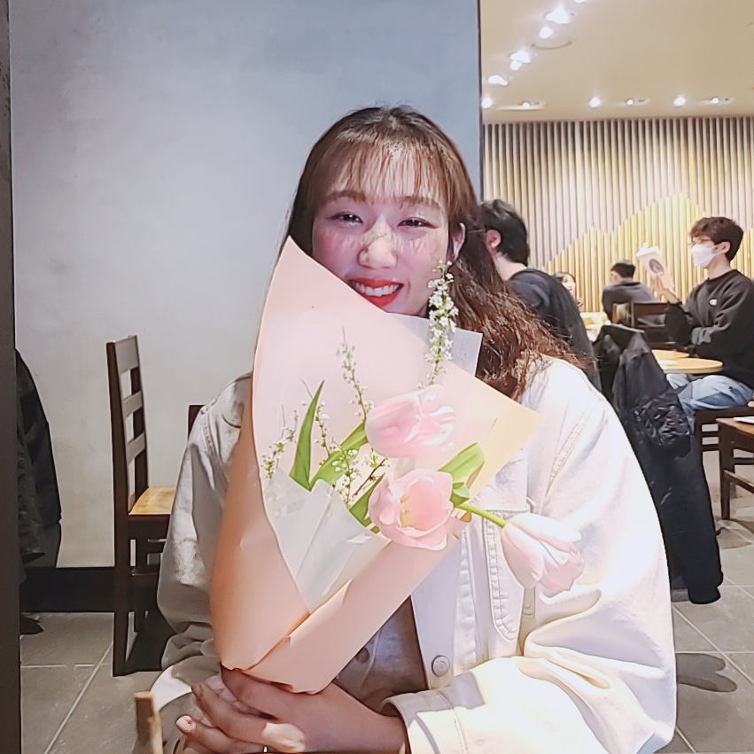
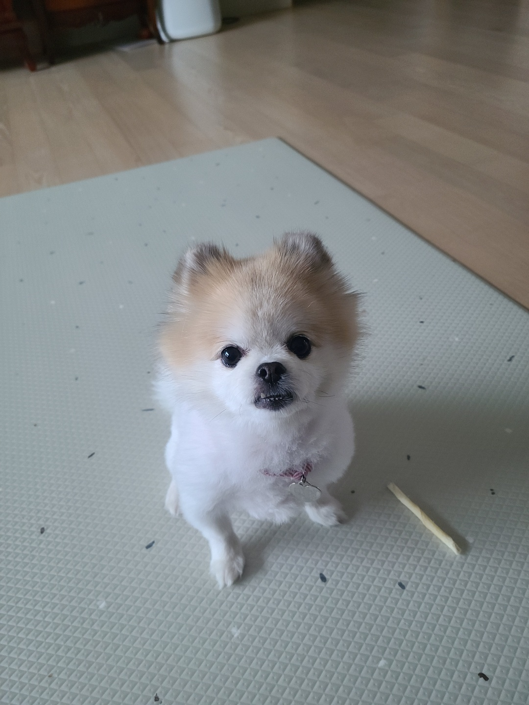

중어중국학과 20180345 4학년 윤수빈
## 인터넷프로그래밍 끝까지 해보자 나는 할 수 있다##
윤수빈을 알아보자
1. 생년월일:1999.02.10
2. 본전공: 중어중국학과
3. 복수전공: 컴퓨터학과
4. 가장 좋아하는 것: 우리 강아지 미미

5. 지금 당장 하고 싶은 일: 여행
6. 가장 좋아하는 가수와 노래: Charlie Puth / Charlie Puth-patient
접속
7. 사용가능한 외국어:영어,중국어,일본어
수빈이가 알려주는 중국어 학습법! 여기 를 클릭하세요
이번학기 목표: html/css언어를 배워서 꼭 나만의 특별한 웹페이지를 구사하고 싶었는데 최선을 다해서 배워가는게 많은 알찬 15일을 보내겠습니다!!